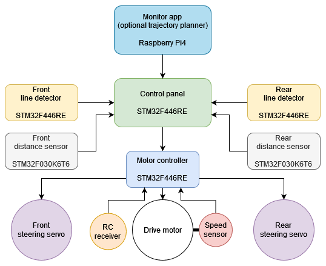
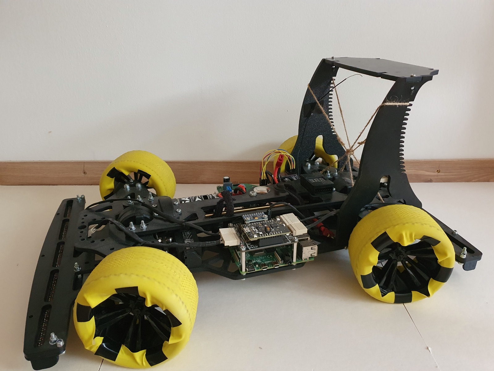
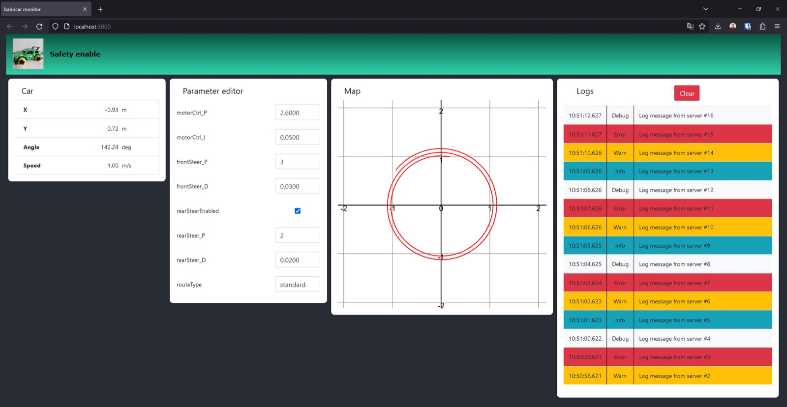

Overview
A self-built autonomous model car that follows lines, solves a line maze and overtakes on a race track. It holds the all-time lap record at RobonAUT, the autonomous model car race at the Budapest University of Technology and Economics.
I built the whole stack: PCBs in Altium Designer, 3D-printed parts in Fusion 360, FreeRTOS firmware for each microcontroller, and the debugging tools.
Architecture
Several STM32 microcontrollers share the work and talk over a CAN bus:
- Motor controller: ramps the drive motor and the front and rear steering servos, and reports actual speed and steering.
- Control panel: follows a predefined route, a planner's output or the floor lines, and runs the maze and race track programs.
- Line detectors and distance sensors: front and rear units feeding the control panel.

Shared code lives in micro-utils, whose mockable hardware layer lets the firmware logic be unit-tested on a laptop.

Monitoring app
A Raspberry Pi on the car runs Node.js services connected through MQTT, with a React UI for live telemetry, logs and parameter tuning. Test drives can be recorded, replayed or simulated.

The repository also holds my MSc thesis on mapping and obstacle avoidance in dynamic environments. Read the thesis (PDF) ↗